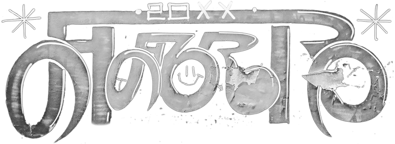

grafika | video | speedarty | o mnie
PRL 21'wieku | ludzie i zwierzęta | inne
Polska Prypeć - Czyli PRL Dwudziestego Pierwszego Wieku
Polska Prypeć to seria zdjęć opuszczonych, zniszczonych i starych
budynków w klimacie post-apokaliptycznym, inspirowana seriami
takimi jak S.T.A.L.K.E.R, Fallout i Mad Max.
Kliknij, żeby powiększyć.